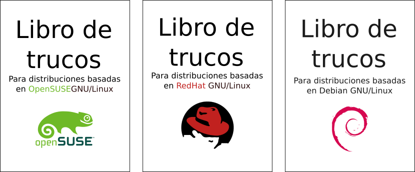

Sobre Libro De Trucos
Los famosos cubos, que todos hemos montado alguna vez, había muy poco espacio y acabamos con comandos muy simples y siempre nos faltaba alguno para hacer algo y teníamos que buscar por Internet en ayuda de Saint Google. Así que crear un libro de 6 páginas permite tener más comandos y comentarios necesarios para entender algunos comandos. Realmente hay tanto espacio que me he permetido el lujo de añadir un mini tutorial de como recuperar en grup en 4 sencillos pasos! Ya que todo el mundo le ha pasado, si no entiendes de tema, casi siempre rompes el grub sin darte cuenta (y yo soy el primero… por suerte se recuperarlo facilmente). Además, un problema que yo veía en los cubos, es que no sabía donde meterlos y/o guardarlos y se me acababan achafando un poco o despegando (a faltar de cartulina algunos los hacía con doble papel), pero estos problemas ya no existen con Libro de Trucos ya que es un librito muy pequeño de 10cm de ancho y 14cm de alto. Además esto permite que se pueda guardar y/o transportar fácilmente en un bolsillo, en una carpeta, entre las hojas de un libro, en el cajón, en el maletero…
Imágenes

{kind=link}
{kind=link}
{kind=link}
{kind=link}

Versiones disponibles
Hasta ahora había pensado hacer 3 versiones (Debian, Red Hat y OpenSUSE) pero para un futuro he pensado hacer “Libros de Trucos” de otras distribuciones importantes (SlackWare, ArchLinux, Ubuntu (aunque el libro de Debian ya vale..); incluso de algunos programas como VIM, Emacs…). Básicamente las diferencias entre libros de Debian/RedHat/OpenSUSE son los comandos de instalación de paquetes ya que unos usan paquetería .DEB y otros .RPM o unos usan apt-get/aptitude y otros yum/zypper/yast.
Como montarlo
Descargar
Licencia
Libro de Trucos por Jesús Camacho se distribuye bajo una Licencia Creative Commons Atribución-CompartirIgual 4.0 Internacional.